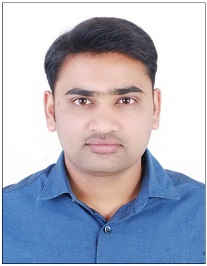

Om Chauhan

Summary
Dedicated and highly skilled software engineer with 12 years of experience
in designing, developing, and implementing cutting-edge software
solutions. Seeking a challenging role at a leading technology company to
leverage my expertise in software development and contribute to innovative
projects.
Education
Master of Computer Application (MCA) (2013) from SMU (Sikkim Manipal
University).
Work Experience
-
Sr Software Engineer | F5 Networks | Hyderabad | August 2019 – Present
-
Implemented Local License Manager to unify the customer experience
by introducing standardized license management.
-
Designed and implemented a scalable solution to activate multiple
BIPs at a time using Golang concurrency pattern (Worker Pool).
Consultant | Rythmos India Pvt Ltd | April 2018 – August 2019
- Implemented Restful APIs for RCX Conexxus Integration Service (RCIS), is a middleware component which translates the ReactorCX REST API to the Conexxus Standard
-
Software Engineer | Aeries Technology Group Pvt Ltd | Dec 2013 – Dec
2017
-
Developed and maintained RESTful APIs, improving the overall
performance and scalability of the platform.
-
Resolved complex technical issues, resulting in huge reduction in
post-launch bug reports.
-
Collaborated with cross-functional teams to gather requirements and
ensure software met customer needs.
Java Developer | TSSS infotech Pvt Ltd | August 2010 – Dec 2013
- Responsible for analyzing, designing, coding and implementing several modules of application.
- Participating in client calls and involved in the requirement gathering from the clients.
- Reviewing the business requirements and designing the application architecture along with the leads.
- Fixing the bugs raised by QA/Testing team on the final/interim release.
Skills
- Programming Languages: Golang, Java
- Databases: SQLite, MySQL, NoSQL (MongoDB)
- Frameworks: Spring Boot, Hibernate, Gin, Open Telemetry
- Tools and Technologies: Git, Docker, Kubernetes, Restful API
- Agile and Scrum methodologies
- Problem-solving and debugging
- Excellent communication and teamwork